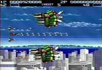

|

Review

Game Type: Side-View Shooter
Nothing innovative about this one; you have your main gatling guns
which can be powered up but never change firing direction, and one
of several additional side weapons that can't be powered up at all.
You blast through several stages and bosses. The usual.
Gameplay: 90/100
Ordinarily I would dismiss a shooter with such a weak powerup system.
You have your main cannon and a bunch of virtually useless side weapons.
No powering up to insane levels, no charging up for a stronger shot, no
nothin'. But in this case the simplistic weapons actually aid the gameplay.
Since you can only fire in a straight line (at least if you want to do
any decent damage), you're forced to get right in the enemies' faces and
into the path of their shots.
And what a lot of shots there are. The screen is covered in bullets
half the time, but they usually move slowly enough that they can be dodged
with a little skill. It's almost a shame they give you an infinite number
of bombs, but their use is discouraged by the need to charge them up for
a moment before release and then let the generators cool down afterwards.
The bombs also do virtually no damage to armored ships, they just wipe
all the bullets from the screen. There's also no shields; if you take a
hit you go down every time. In the end, if a player advances, it is
only by virtue of her own skill.
Graphics: 90/100
Ah, 256-color bliss. The scenery is beautiful. The ship designs aren't
bad either (well, not in the early stages). The weapons aren't exactly a
joy to watch in action but that's the only area in which the graphics are
any less than excellent.
Sound: 50/100
Are those hisses supposed to be explosions? I guess this game doesn't
excel in every category. The sound effects lack bass and the music just
isn't sinister enough.
Overall: 90/100
Power fiends who like powering up to level 20 and destroying bosses
at the touch of a button will hate this game. Aero Blasters forces you to
actually dodge incoming fire rather than plow through it. You can't hide
in a corner and let some homing missiles do your dirty work; you have to
place yourself at risk to take out any enemies. But that is what makes it
a such a great shooter - it genuinely tests your skill.
Codes
- Sound Test and Extra Credits
- At title screen press R and Select simultaneously 3 times. A new
Credits option will appear. Press Select for a Sound Test option.
- Stage Select
- Enter Sound Test mode above. Press I ten times to skip to Stage 2,
or press I one more time for each additional stage you want to skip.
Then press Select, Select, Run.
|